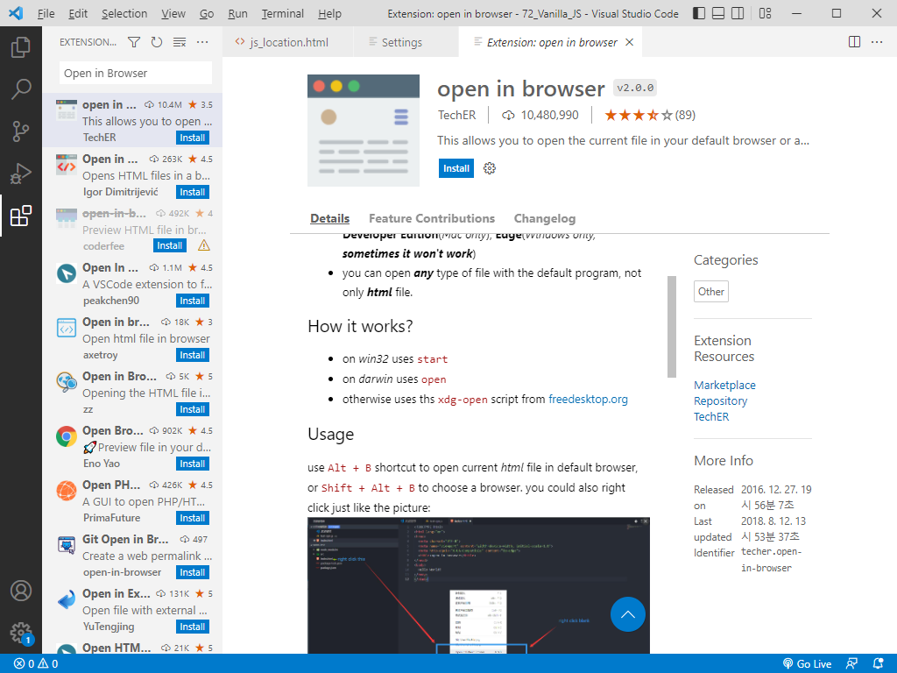

1. 자바스크립트 기본 문법
1.0 vs code & vs code Extension 설치
1.0.0 Node.js 설치
node -v npm -v
1.0.1 vs code portable 설치
다운로드 압축을 풀고 data 폴더를 만들어 준다.
data 폴더내에 사용자 설정 및 확장 기능 등이 저장되기 때문에 압축 해제한 .zip 파일의 디렉토리만 바꿔가면서 다중 설치가 가능
1.0.2 vs code Extension 설치
1.0.2.1 JavaScript (ES6) code snippets
1) 빨간색 부분을 클릭해서 플러그인을 검색할 수 있다.
2) JavaScript (ES6) code snippets를 검색해서 설치
1.0.2.2 Reactjs code snippets
여기서는 React가 쓰이지 않지만 미리 설치
1.0.2.3 HTML snippets
지원 중단 버젼이지만 상관 없음
1.0.2.4 ESLint
1.0.2.5 Prettier - Code formatter
1.0.2.6 Live Server
Hit ( Alt + L, Alt + O ) to Open the Server and (alt+L, alt+C) to Stop the server (You can change the shortcut form keybinding)
1.0.2.7 Open in Browser
Hit ( Alt + B )

1.1 자바스크립트 작성 위치
1.1.1 파일 생성
1) ( Ctrl + ` )키를 눌러 터미널 모드에서 chapter01\ 폴더에 test01.html로 파일 생성
Windows PowerShell Copyright (C) Microsoft Corporation. All rights reserved. 새로운 크로스 플랫폼 PowerShell 사용 https://aka.ms/pscore6 PS C:\Vanilla_JS> code . 디렉터리: C:\Vanilla_JS Mode LastWriteTime Length Name ---- ------------- ------ ---- d----- 2024-09-06 오후 3:16 ch03 PS C:\Vanilla_JS> cd chapter01 PS C:\Vanilla_JS\chapter01>
2) ( Ctrl + N ) 키를 누르고 html:5를 치고 ( Ctrl + S )를 눌러 저장한다. 저장 이름은 test01.html
3) 실행은 ( Alt + L , Alt + O ) 키를 눌러서 토글로 서버로 실행하거나 ( Alt + B ) 키를 눌러 서버 없이 브라우저로 실행한다.
1.1.2 자바 스크립트란?
개발자가 만든 문서에 방문자가 방문하여 어떤 동작을 취했을 때, 그 동작에 대응하여 반응이 일어날 수 있도록 해주는 언어
- 자바스크립트 언어는 컴퓨터와 사람이 함께 알아들을 수 있는 약속된 언어로 웹과 함께 등장한 언어
- 지금은 자바스크립트가 웹브라우저만 제어하기 위한것만 사용하는 것이 아니라 웹 서버를 동작하기 위한 도구로써 사용되고 이것을 서버 사이드 스크립트라고 함.
- 대표적인 기술로 JAVA, Python , PHP 등이 있는데 그 중 node.js는 웹브라우저와 웹서버를 함께 사용할 수 있고 자바스크립트로 만들 수 있다는 장점이 있음.
자바스크립트 언어의 특징
- 인터프린터 언어 (작성된 순서대로 윗줄부터 순차대로 구문 분석, 코드에 문제가 생기면 에러가 발생한 행 전까지 구문 분석하고 에러 발생한 다음 줄부터는 구분 분석 안 함)
- 클라이언트 스크립트 언어 (서버에서 실행되는 것이 아니라 사용자 컴퓨터에서 실행, 그래서 서버의 부하룰 줄일 수 있음)
- 객체 기반 언어 (다양한 객체가 존재하며, 그에 해당하는 다양한 기능(메서드)들이 존재)
- 공개된 언어 (외부로 분리할 수 있으나 완벽히 숨길 수는 없음)
- 다양한 라이브러리를 활용할 수 있음 (대표적인 라이브러리 언어는 제이쿼리, 자바스크립트로 구현하기 힘든 것들을 쉽게 구현할수 있도록 만들어 놓은 프로그래밍 언어)
1.1.3 JavaScript 기초 문법
1) (;) 세미콜론을 사용할때와 하지 않았을때의 차이점? 자바스크립트는 enter를 사용하면 내용이 끝난것으로 인지하여 (;)을 사용하지 않아도 내용이 끝남. 하지만 특히 jQuery 에서는 한 문장에 여러 개의 문법을 사용할때는 꼭 세미콜론을 사용해야만 문법오류가 나지 않음.
2) 유효성 검사시 오류를 막는 CDATA 구문
내부형으로 작성된 스크립트에서 Html 태그를 포함하게 되면 정상 작동은 할지라도 브라우저의 유효성 검사기들은 오류를 지적함. (외부형일떄는 문제 없음)
3) XML 문서의 일부로 잘못 해석되는 것을 방지
CDATA 섹션은 JavaScript 코드가 XML 문서의 일부로 잘못 해석되는 것을 방지합니다. 그래서 CDATA는 데이터가 정확히 의도한 대로 처리되고 전송되게 하는 데 중요한 역할을 한다.
chapter01/test02.html
1.1.4 스크립트 구조
chapter01/test03.html
1.1.5 js 파일의 위치에 따른 차이점
HTML에서 자바스크립트를 작성할 수 있는 위치는 2가지이다. HTML의 head 태그와 body 태그이다.
chapter01/test04.html
자바스크립트 코드를 head 태그 안에 작성하면 브라우저가 body 태그의 HTML 코드를 실행하기 전에 자바스크립트 코드를 먼저 해석하게 된다. 사용자가 웹 브라우저에 접속했을 때 사용자 눈에 보이는 것은 HTML 코드로 작성된 화면 UI이다. 자바스크립트로 작성된 코드는 웹 브라우저에 접속한 사용자에게는 보이지 않는다. head 태그 안에 구현된 자바스크립트 코드가 많다면 브라우저는 자바스크립트를 모두 해석한 이후에 HTML 코드를 실행하기 때문에 사용자에게 보이는 웹 페이지는 그만큼 느려질 수 있다.
body 태그에 자바스크립트 코드를 작성할 때는 body 태그 제일 하단의 <script></script> 태그 안에 작성한다. 이렇게 하는 이유는 body 태그에 있는 HTML 코드가 모두 실행되어 사용자가 보고 있는 브라우저 화면에 나타난 후 자바스크립트 코드를 실행함으로써 사용자가 느끼는 페이지의 로딩 속도를 높일 수 있다.
그래서 HTML 코드를 실행시키기 위해 반드시 먼저 작성되어야 하는 자바스크립트 코드를 제외하고는 body 태그 제일 하단에 코드를 작성하는 것이 좋다. 이외에도 제일 하단의 코드처럼 별도로 자바스크립트 파일을 생성해서 사용할 수도 있다.
1.1.6 실행
파일 단순 실행 Alt + B, 서버 실행 Alt + L , Alt + O
1.1.7 콘솔 (Console)
콘솔 확인 : F12 , Console 탭
1.1.8 주석 처리
일반 주석 : Ctrl + /, 묶음 주석 : Alt + Shift + A
1.2 변수와 상수
1.2.1 변수와 상수
프로그램에서 변수의 의미
|
변수란? 변하는 데이터(값)를 저장 할 수 있는 메모리 공간
|
변수와 상수
변수는 데이터를 담는 그릇이라고 생각하면 된다. 자바스크립트에서는 변수에 데이터뿐만 아니라 오브젝트 및 함수도 담을 수 있다. 우리가 데이터를 프로그램 코드에서 이용하려면 데이터를 사용하겠다고 프로그램에 알려줘야 하는데, 이렇게 데이터/오브젝트/함수 등을 사용하겠다고 선언하는 것을 변수를 선언한다고 한다. 변수를 선언하게 되면 자바스크립트는 변수 값을 저장하기 위한 메모리 공간을 확보하고 값을 저장하는데 변수를 선언할 때 사용한 변수명을 통해 값이 저장되어 있는 메모리 공간에 연결하게 된다. 정확히는 변수명(변수 식별자) 이 값이 저장되어 잉ㅆ는 메모리 위치를 기억하고 참조 중인 상태가 되는 것이다.
상수는 변화하지 않는 값을 가지고 있는 변수를 뜻한다. 자바스크립트에서 변수는 var, let 키워드를, 상수는 const 키워드를 사용한다.
자바나 C 같은 프로그래밍 언어의 경우는 변수를 선언할 때 변수에 담을 데이터 타입에 따라 변수를 선언하는 방식이 다르지만, 자바스크립트는 데이터의 타입에 상관없이 동일한 변수 선언자를 사용할 수 있다.
변수 선언 형식
자바스크립트에서는 데이터를 변수 선언자, 변수명, 할당할 값 형식으로 선언해서 사용한다. 변수명은 최대한 의미 있는 이름을 사용해서 변수명을 보고 어떤 용도로 사용될지 알 수 있도록 하는 것이 매우 중요하다.
일반적으로 변수명(식별자)을 지을 때는 특별한 제약이 없지만, 다음과 같은 규칙이 있다.
- 변수명은 문자(특수문자 제외), 숫자, _(언더스코어), $(달러 기호)를 포함하여 만들 수 있다.
- 변수명은 숫자로 시작할 수 없다.
- 변수명은 대소문자를 구분한다.
- 자바스크립트 예약어는 사용할 수 없다.
자바스크립트 예약어는 다음과 같다. 여기서 예약어란 자바스크립트에서 이미 문법적인 용도로 사용되고 있기 때문에 변수명으로 사용할 수 없는 단어를 말한다.
네이밍 컨벤션(naming conventiion)
네이밍 컨벤션이란 변수명을 짓는 규칙을 말한다.
자바스크립트를 포함한 프로그래밍 언어 모두 변수명을 만들 때 크게 다음과 같은 4가지 규칙을 사용한다.
- 카멜 표기법(camelCase) - 변수명이 두 단어 이상이면 두 번째 이후부터는 단어의 첫 번째 문자를 대문자로, 나머지는 모두 소문자로 작성하며 모든 단어를 붙여서 사용한다.
- 스네이크 표기법(snake_case) - 변수명을 모두 소문자로 사용하며 단어와 단어 사이에 언더스코어를 사용해서 연결한다.
- 파스칼 표기법(PascalCase) - 카멜표기법과 유사하지만, 첫 번째 단어의 첫 문자도 대문자를 사용한다.
- 헝가리언 표기법(Hungarian Notation) - 소문자 변수타입+단어(첫문자는 대문자) 표기법을 사용한다.
첫 단어는 반드시 데이터 타입에 해당하는 약어를 사용한다.
예를 들어 문자열은 str, 숫자는 i 혹은 n을 사용하며, 변수명을 보면 어떤 데이터 타입일지 예측이 가능하다.
chapter01/test05.html
1.2.2 var, let, const 선언자
1.2.2.1 var 선언자
var로 변수를 선언하면 같은 자바스크립트 코드 안에서 동일한 변수명을 사용하는 것이 가능하다. 비슷한 용도로 사용되는 변수의 이름을 구분하기 위해서 x1, x2와 같은 방법을 사용한다.
장점으로는 동일한 변수명을 사용해도 에러가 나지 않기 때문에 매번 새로운 변수명을 만들어서 사용하지 않아도 된다.
단점으로는 기존 코드에서 동일한 이름으로 사용되던 변수에 할당된 값이 사라지므로 해당 변수를 참조하고 있는 프로그램에 예기치 못한 에러가 발생할 수도 있다.
1.2.2.2 let 선언자
var로 변수를 선언하면 같은 자바스크립트 코드 안에서 동일한 변수명을 사용하는 것이 가능하다. 비슷한 용도로 사용되는 변수의 이름을 구분하기 위해서 x1, x2와 같은 방법을 사용한다.
장점으로는 동일한 변수명을 사용해도 에러가 나지 않기 때문에 매번 새로운 변수명을 만들어서 사용하지 않아도 된다.
단점으로는 기존 코드에서 동일한 이름으로 사용되던 변수에 할당된 값이 사라지므로 해당 변수를 참조하고 있는 프로그램에 예기치 못한 에러가 발생할 수도 있다.
1.2.2.3 const 선언자
ES6에 새롭게 추가된 선언자로 const는 변화하지 않는 변수를 선언할 때 사용한다. 이렇게 const로 선언한 변수를 상수(constant)라고 한다.
const 선언자를 사용할 경우 선언 시점에 값을 할당한 후 같은 변수명으로 재선언 뿐만 아니라 이미 선언된 변수의 값도 변경할 수 없다.
- 포맷 형태를 지정하여 변경할 수 없도록 하면 좋은 UX를 제공
ex) const DATE_FORAMT = 'yyyy.mm.dd'; - 기억하기 힘든 값을 변수에 할당해 별칭으로 사용
ex) const COLOR_RED = '#FF0000';
! 변수명을 지을 때 상수인 경우는 소문자를 사용할 때도 있고, 대문자를 사용하는 경우도 있다. 색상 값, 날짜 포맷처럼 하드 코딩된 상수 값을 할당할 때는 일반적으로 변수명을 대문자로 사용한다.
const DATE_FORMAT = 'yyyy.MM.dd'; //날짜 포맷은 년도.월.일
chapter01/test06.html
1.3 데이터 타입
데이터 타입은 값의 종류를 의미하며, 그 종류에는 숫자, 문자열 등이 존재한다. 원시 타입(기본 타입, primitive type)과 참조 타입(객체 타입, reference type)으로 구성된다.
1.3.1 기본 자료형
1.3.1.0A 원시 타입(primitive type)은 불변성을 가짐
값을 저장하는 데이터 타입이다.
원시타입은 값을 변형할 수 없는 불변성(immutable)을 가진다.
따라서 새로운 값을 다시 할당할 수는 있어도 있던 값을 변형하는 것은 불가능 -> 값을 교체할 수는 있으나 변형은 안됨
chapter01/test07.html
1.3.1.0B 원시 타입인 데이터 타입 종류
- String(문자열)
- Number(숫자)
- BigInt
- Boolean(참 / 거짓)
- Undefined
- Null
- Symbol
1.3.1.1 String(문자열)
- 텍스트 데이터를 나타낼 때 사용한다.
- 문자열(String)을 쌍 따옴표(" ") 또는 홑 따옴표(' ')로 감싸 변수로 할당한다.
chapter01/test08.html
1.3.1.2 Number(숫자)
- 숫자를 표현할 때 사용한다.
- (범위 : -2^53 - 1 ~ 2^53 + 1) - C언어 등 다른 프로그래밍 언어와 다르게 숫자 타입을 구분하지 않는다.
- (C언어의 경우에 숫자를 정수형, 실수형 등(integer, short, float)으로 구분하여 사용) - 문자열 데이터와는 다르게 따옴표를 사용하지 않고 변수를 할당할 수 있다.
- 64비트 부동소수점 형태로 저장한다.
- 부동소수점 숫자 형태 외에도 +infinity(양의 무한대), -infinity(음의 무한대), NaN(Not a Number)의 값을 가진다.
chapter01/test09.html
1.3.1.3 BigInt
- Number가 나타낼 수 있는 범위보다 더 큰 정수를 표현할 수 있는 객체
- 정수 뒤 n을 붙이거나, BigInt() 생성자를 호출하여 생성
chapter01/test10.html
1.3.1.4 Boolean(참/거짓, 논리형)
- 참/거짓을 나타내는 데이터 타입이다.
- 참은 true, 거짓은 false로 나타낸다.
chapter01/test11.html
1.3.1.5 Undefined
- 데이터 타입이자 데이터 값, 아무 값도 존재하지 않는다는 표현
- 값을 할당하지 않은 변수는 Undefined 값을 갖는다.
chapter01/test12.html
1.3.1.6 Null
- 값이 존재하지 않는다를 명시할 때 사용한다.
- Undefined와는 다르게 의도적으로 값이 '없음'을 설정한다.
- 어떤 값이 할당될지 모를 때 사용한다.
chapter01/test13.html
1.3.1.7 Symbol
- ES6에 새로 추가된 데이터 타입이다.
- 변경이 불가능하며 고유한 값을 갖는다.
- 스크립트에서 충돌이 일어나지 않도록 유일한 속성 키를 만들 때 사용한다.(객체의 key로 사용 가능)
- Symbol() 생성자를 사용하여 키를 만든다.
- * 객체를 모른다면 아래 객체 내용을 먼저 확인하고 읽는 것을 권장 *
chapter01/test14.html
보충1) chapter 4.11에서 다루는 예제를 미리 해보자.
chapter01/test15.html
1) Object에 2개의 키 값이 설정되어 있다.
2) firstName과 lastName을 합쳐서 Full Name을 가져오는 함수를 오브젝트에 추가해 보자.
3) 다음과 같이 오브젝트에 있는 모든 key는 for-in 문을 사용해서 가져올 수 있다. 여기서는 firstName, lastName, getFullName 이렇게 3개가 출력된다.
4) Symbol은 자바스크립트에서 절대 충돌이 일어나지 않는 유일한 key 값을 만들어준다. 다음과 같이 getFullName이라는 key를 Symbol을 사용해서 생성해보도록 하자.
5) 이번에는 오브젝트의 key를 출력하면 다음과 같이 firstName, lastName만 출력된다. Symbol를 사용하면 유일한 key를 생성할 수 있을 뿐만 아니라, Symbol로 추가한 key를 노출시키지 않고 감출 수 있다는 이점이 생긴다.
보충2) 변수의 잘못된 사용예
chapter01/test16.html
보충3) 문자변수와 숫자변수 (var은 지역변수임)
chapter01/test17.html
보충4) 10진수로 숫자변수 나타내기
chapter01/test18.html
보충5) 문자변수 나타내기
chapter01/test19.html
보충6) 참, 거짓 변수
chapter01/test20.html
보충7) 변수가 없다면?
|
alert(100+10)
a=100 |
문제)
다음 태그를 이용하여 자바스크립트로 홈페이지를 꾸며보세요.
chapter01/test21.html
<body style="margin-top: 50px;">
<div style="color: #ff6400; text-align: center; margin: 0 auto; width: 720px;">
안녕하세요. 저의 집에 오신 것을 환영합니다.
<img src="images/hello.png" width="720" height="720" />
</div>
</body>
1.3.2 객체(Objects)
1.3.1.1 Object
- 키(Key)-값(value) 쌍으로 데이터를 저장한다.
- 객체의 키를 이용해서 데이터의 값을 변경하거나 가져오는 것이 가능하다.
- 객체의 키 값은 문자형, 숫자형 등 자바스크립트의 모든 객체를 값으로 사용할 수 있다.
- 객체로 함수, 배열의 값을 가질 수 있다.
- 객체는 { } 안에 담는다.
chapter01/test22.html
1) firstName, lastName, age, eyeColor, 1, objName, arr 가 키가 된다. 키를 이용해서 데이터를 변경하거나 가져올 수 있다.
2) 데이터를 변경하는 방법은 다음과 같다.
3) 데이터를 가져오는 방법은 다음과 같다.
4) 오브젝트의 키에 대한 값으로는 문자형 숫자형뿐만 아니라 자바스크립트의 모든 객체를 값으로 할당해서 사용할 수 있다.
5) 오브젝트의 키에 대한 값으로는 문자형, 숫자형뿐만 아니라 자바스크립트의 모든 객체를 값으로 할당해서 사용할 수 있다.
1.3.1.2 Array(배열)
- 하나 이상의 다중 데이터를 저장하는 데 사용한다.
- 여러 값을 하나의 단일 참조(single reference)로 저장할 수 있도록 해주는 구조이다.
- 주로 성격이 비슷한 값을 하나의 변수에 담고 싶을 때 사용한다.
ex) let mbti = ["esfp", "isfj", "enfp", "entp",....] - 배열은 객체와 마찬가지로 자바스크립트의 모든 객체를 값으로 가질 수 있다.
chapter01/test23.html
1.3.1.3 typeof() 연산자
- 변수의 데이터 타입을 확인하고 싶을 때 사용하는 연산자이다.
- "typeof 확인할 데이터 타입"의 형태로 확인한다.
chapter01/test24.html
배열(Array)도 자바스크립트에서는 Object이기 때문에 데이터 타입은 Array가 아니라 Object가 된다.
1.4 64 비트 부동소수점
1.5 연산자
1.5.1 할당(대입)연산자, 복합 할당 연산자
| A += B (A와 B를 더한 값을 A에 할당) A -= B (A와 B를 뺀 값을 A에 할당) A *= B (A와 B를 곱한 값을 A에 할당) A /= B (A와 B를 나눈 값을 A에 할당) A %= B (A와 B를 나눈뒤 나머지 값을 A에 할당) |
사용예)
chapter01/test25.html
1.5.2 비교(관계)연산자
| A == B (A와 B가 같다) A === B (A와 B의 타입까지 같다) A != B (A와 B가 같지 않다) A < B (A가 B보다 작다) A <= B (A가 B보다 작거나 같다) A > B (A가 B보다 크다) A >= B (A가 B보다 크거나 같다) |
사용예)
chapter01/test26.html
1.5.3A 산술연산자
| +, -, *, /, % |
사용예) 산술연산자와 문자열과 숫자열 표현
chapter01/test27.html
1.5.3B 증감연산자
| Y = ++Y Y = --Y Y = Y++ Y = Y-- |
사용예)
chapter01/test28.html
1.5.4 논리연산자
| A && B (A와 B가 모두 True일 경우에만 True) A || B (A또는 B가 True일 경우 True) !A (A가 True이면 False, False이면 True) A ^ B (A와 B가 모두 True거나 False이면 True) |
사용예) 4번째는 실행 결과값이 1이 출력 (1은 False)
chapter01/test29.html
1.5.5 문자열 연산자
문자열 값을 연결 연산자(+)를 이용해서 두 문자열을 합친 새로운 문자열을 반환한다.
연산자 우선순위
사용예)
chapter01/test30.html
연산자 우선순위 순서
- 괄호 : ()
- 단항 연산자 : --, ++, !
- 산술 연산자 : *, /, %, +, -
- 비교 연산자 : >, >=, <, <=, ==, ===, !==
- 논리 연산자 : &&, ||
- 대입(복합 대입)연산자 : =, +=, -+, *=, /=, %=
사용예) 내장 메서드(alert() 경고창)
chapter01/test31.html
사용예) 내장 메서드(confirm() 확인/취소창)
chapter01/test32.html
Mission01
20대 대상의 소개팅을 준비 중입니다. 그런데 남성은 다 모집이 되었지만 여성은 아직 모집이 다 되지 않았네요. prompt메서드를 활용하여 성별과 나이를 물어 봅니다. 20대 여성이라면 결과값이 true로, 아니라면 결과 값으로 false가 나오게 만드세요.
chapter01/test33.html
Mission02
prompt 메서드를 활용하여 국어, 영어, 수학 점수를 입력 받으세요. 평균이 70점 이상이고 각 과목별 점수가 60점 이상이면 true를 아니라면 false를 출력합니다.
chapter01/test34.html
1.5.6 조건(삼항)연산자
| (조건) ? A : B |
사용예)
chapter01/test35.html
Mission03
오샘의 지출 내역은 교통비 3,000원 식비 7,000원, 음료비 2,000원 입니다. 삼항 조건 연산자를 사용하여 하루 적정 지출 비용인 1만원을 초과했을 경우 "000원 초과"라고 출력되거나 아니면 "돈 관리 참 잘했어요!"라고 출력되도록 해보세요.
chapter01/test36.html
Mission04
방문자에게 질의응답 창(prompt)을 이용하여 신장과 몸무게를 입력받아 옵니다. 방문자의 몸무게가 적정 몸무게보다 이상일 경우"적정 몸무게 이상", 미만일 경우에는 "적정 몸무게 미달"로 출력되도록 하세요. 적정 몸무게 공식은 '적정 몸무게=(신장-100)*0.9'
chapter01/test37.html
1.6 조건문
1.6.1 if ~ else
사용예)
chapter01/test38.html
사용예)
chapter01/test39.html
사용예)
chapter01/test40.html
Mission05
질의응답 창(prompt)을 이용하여 임의로 정한 변수에 시험 점수를 입력 받아 저장한 후 만일 70점 보다 크거나 같으면 '합격'이라는 메시지를 출럭하세요.
chapter01/test41.html
Mission06
나이가 20세 이상이고, 30세 미만일 경우에는 '통과'라고 출력하고, 그렇지 않으면 '비통과'라고 출력하세요.
chapter01/test42.html
1.6.2 swich ~ case문
- 지정한 변수에 저장된 데이터(data)와 정확히 일치되는 경우(case)가 있는지 검사하여 일치하는 데이터가 있을 때에는 해당 실행문을 수행한 뒤 마지막의 break문으로 반복을 끝냄. 일치되는 값이 없을 때에는 default에 해당하는 실행문을 수행한 뒤 문장을 마침.
- 조건문과의 차이점(조건문은 말 그대로 '데이터 중복'의 경우라 하더라도 특정'조건'을 허용할 때 사용하는 반면, swich~case문은 '정확히 일치하는' 경우(case)만 허용할 때 사용
사용예)
chapter01/test43.html
사용예)
chapter01/test44.html
사용예)
chapter01/test45.html
1.6.3 if문과 switch 문의 차이
if문은 조건식에 비교 연산을 사용할 수 있기에 switch문보다 훨씬 유용하고 자바스크립트 구현 시 가장 많이 사용된다. 하지만 if문은 조건식을 위에서부터 차례대로 순차적으로 비교하게 된다. 운이 안 좋아서 조건을 만족하는 조건식이 가장 아래에 있다면, 비교하지 않아도 되는 조건식을 모두 비교하는 비효율성이 있다. 하지만 switch문은 상수 값을 판단하고 해당하는 case 절로 바로 찾아가기 때문에 이럴 경우 if문보다 훨씬 효율적이다.
그러므로 비교 연산이 필요 없고 조건을 비교할 대상이 범위가 아닌 특정 상수 값인 경우라면 if문보다 switch문을 사용하는 것이 좋다.
과제) 위 예제를 이용하여 자신의 하루 일과를 if문으로 나타내 보세요.
chapter01/test46.html
1.7 반복문
for-loop, for-in, for-of, while 같은 반복문을 제공한다.
1.7.0A FOR
| for (초기값; 최종값; 증가식) |
사용예) 특정 문자열을 400번 반복해서 화면에 출력
chapter01/test47.html
Mission07
for 문을 이용하여 <h>태그를 사용하여 h1~h6까지의 태그 결과물을 내용은 재미있는 자바스크립트를 나타내시오

chapter01/test48.html
1.7.0B 중첩 for
사용예) 구구단 출력
chapter01/test50.html
1.7.1 for-loop
다음과 같이 브랜드명이 들어 있는 배열이 있다.
let brands = ["애플", "구글", "페이스북", "아마존", "삼성전자"];
brands 배열에 담긴 브랜드명을 콘솔 창에 모두 출력하려면 배열의 처음 인덱스부터 마지막 인덱스까지 코드를 작성해야 한다.
chapter01/test51.html
1.7.2 for-in
for-in문은 데이터 타입 중 배열뿐만 아니라 Object에도 사용할 수 있는 반복문이다. Object는 데이터를 저장할 때 키(key)를 사용하여 저장하고, 키를 이용해서 읽을 수 있다. for-in문은 Object 내에 정의된 키 값의 수만큼 코드 블록을 실행한다.
for (const key in object) {
//실행할 코드 블록
}
예를 들어 다음과 같이 사람의 정보를 담는 Object가 있다. Object 내에 선언된 키는 fname, lname, age가 있다. for-in 문을 사용하면 반복문이 실행되면서 fname, lname, age를 key 변수에 할당하게 되고, 코드 블록 내의 person 객체에 key를 전달하여 저장된 데이터를 가져올 수 있다.
chapter01/test52.html
for-in 문은 배열에 사용하면 배열에 등록된 데이터 수만큼 반복문을 실행한다.
chapter01/test53.html
1.7.3 for-of
for-of문은 Array, Map, String 등 iterable(반복 가능한) 객체에서 사용 가능한 반복문이다.
for (const element of iterable) {
//실행할 코드 블록
}
다음은 배열의 각 요소를 for-of를 사용해서 추출하는 예제이다. for-of를 사용하면 for-loop를 사용하는 것보다 훨씬 코드가 간결해진다.
chapter01/test54.html
다음은 문자열의 각 문자를 for-of를 사용해서 추출하는 예제이다.
chapter01/test55.html
1.7.4 WHILE
while(조건문) // 조건문이 참이면 A를 실행하고 조건문이 거짓이면 B를 실행 |
사용예) 1부터 10까지의 합 계산
chapter01/test56.html
Mission08
위의 while문과 같은 결과를 for 문으로 출력해 보세요. 예) 1+2+3+4+5+6+7+8+9+10=55
chapter01/test57.html
Mission09
while문을 이용하여 10부터 1까지 내림차순으로 2의 배수(짝수)만 출력해 보세요.
chapter01/test58.html
Mission10
while문을 이용하여 구구단 중 5단을 출력해보세요
chapter01/test59.html
1.7.4 DO WHILE
WHILE문은 조건을 확인한 후에 문장을 실행하지만, DO WHILE문은 실행한 다음 조건을 확인하도록 해주는 반복문이다. 그러므로 DO WHILE문은 조건에 상관없이 반복 문장을 최소 한번은 실행하게 된다.
| do { A } while (조건) B |
사용예) 1부터 10까지의 합 계산
chapter01/test60.html
1.7.5 CONTINUE문
반복문 문장 안에 사용하여 반복 실행 중에 조건문으로 되돌아 가게 해주는 역활을 한다.
즉, 반목문에서 특정 부분을 실행하지 않게 하고 싶을 때 간단하게 사용할 수 있다.
사용예) 1부터 10까지의 수중에서 3을 제외한 수의 합을 계산
chapter01/test61.html
Mission11
예를 들어, 지페를 투입하면 500원짜리 동전으로 교환해주는 자판기가 있다고 생각해보자. 사용자가 넣은 금액이 0원이 될 때까지 while 문을 이용하여 사용자가 투입한 지폐 금액에서 500원씩 차감한다. 그리고 500원짜리 동전을 몇 개 내보낼지 계산한다.
chapter01/test62.html
이처럼 배열의 길이가 아니라, 특정 조건을 만족하는 동안 반복문을 실행하고자 할 때 while문을 사용하면 효율적으로 문제를 해결할 수 있다.
1.8 함수(Function)
- 함수에는 파라메터가 필요한 함수가 있고 필요없는 함수가 있다.
- 함수를 실행하려면 함수를 정의하고 정의된 함수를 실행해야 한다.
1.8.1 기본형식
| function 함수이름() { 문장 } |
사용예) 함수정의하고 사용하기
chapter01/test63.html
실전예) 함수 정의와 사용
chapter01/test64.html
사용예) 함수의 매개변수 정의와 사용
전달(인자)값이 있는 함수 : 매개 변수와 인자 값(갯수)이 동일하게 나열되어야 정확한 전달이 가능
chapter01/test65.html
1.8.2 함수에서 변수 사용할 때 주의할 점
| var 변수 : 지역 변수로 정의함 변수 : 전역 변수로 정의함 |
- 함수 외부에 선언하거나 함수 내에서 var 연산자를 붙이지 않고 선언. 외부에서 선언한 경우 var를 붙이지 않아도 실행에는 문제가 없으나 좋지 않은 습관
- 지역변수와 전역변수를 구분하는 이유 : 변수의 중복 사용을 막기 위해서... 전역변수와 지역변수의 이름이 같다는 것만으로 오류가 발생하지는 않으며 해당 함수 내에서는 지역변수가 우선 호출되며 프로그램이 복잡해질수록 깔끔한 실행을 위해서는 될 수록 구분해주는 것이 좋음
사용예) 지역변수와 전역변수 설정
chapter01/test66.html
사용예) 지역변수와 전역변수 사용하기
chapter01/test67.html
함수에서 return문의 역할
- return문 이란? 함수에서 결과값을 되돌려 줄 때 사용.
- 함수에서 return문이 실행되면 반복문에서 break문과 비슷하게 실행문이 강제로 종료.
- 즉, 함수 정의문에 실행문으로 return문이 사용되었으면, 함수를 호출했을 때 결과값을 반환하고 진행중이던 실행문을 정지시키고 함수를 강제로 종료.
1.8.3 함수에 대한 주석 처리
chapter01/test68.html
1.8.4 함수 표현식
함수 표현식은 변수에 함수를 할당해서 사용하는 방식이다.
이렇게 함수를 선언하면 함수를 호출할 때 변수명을 사용하면 된다.
chapter01/test69.html
언뜻 보기에는 두 방식이 차이가 없는 것처럼 보이지만, 실행 측면에서 큰 차이가 있다. 일반적인 함수 선언 방식의 경우 다음과 같이 함수 호출 코드가 먼저 나오고 함수 선언이 나중에 되더라도 함수가 정상적으로 실행된다.
chapter01/test70.html
이렇게 정상적으로 실행되는 이유는 자바스크립트 해석 엔진이 일반적인 함수 방식으로 선언되는 함수의 경우 먼저 해석을 하기 때문에 호출하는 코드 구분이 위에 있어도 실행이 되는 것이다.
하지만 변수에 함수를 할당하는 방식은 작성된 코드 순서대로 실행된다. 함수를 담고 있는 변수에 대한 코드 구문이 함수를 호출하는 코드 구문보다 위에 있을 경우 에러가 발생한다.
chapter01/test71.html
1.8.5 Function 생성자 함수
자바스크립트의 내장 함수인 Function 함수에 파라미터와 코드 블록을 문자열로 순서대로 전달하여 생성한다. 전달하는 파라미터가 없으면 코드 블록만 문자열로 전달하면 되고, 파라미터가 있으면 파라미터 개수만큼 문자열로 파라미터 이름을 전달한다.
chapter01/test72.html
Function 내장 함수를 이용해서 함수를 생성하는 경우는 코드 블록을 동적으로 생성하고 싶을 때 유리하다. 예를 들어 계산기는 사용자가 숫자를 선택하고, 더하기/빼기 같은 연산자를 선택한 후 연산에 대한 결과를 호출한다. 만약에 이 프로그램을 자바스크립트로 구현하는 데 함수 선언식을 사용한다면 다음과 같이 구현할 수 있다.
각 연산자를 적용하기 위해서 사용자가 선택한 연산자가 무엇인지 조건문(if)을 사용해서 모두 구현해야 한다. 하지만 Function 생성자를 통해서 함수를 생성하면 다음과 같이 코드를 효율적으로 작성할 수 있다.
참고)
chapter01/test73.html